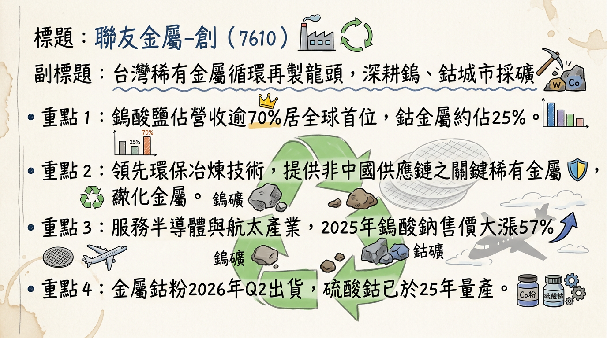
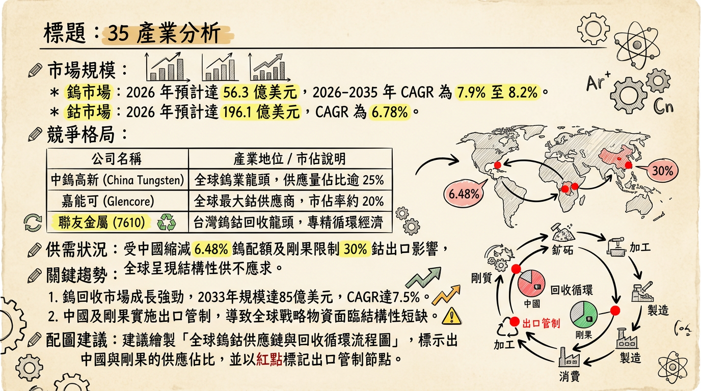
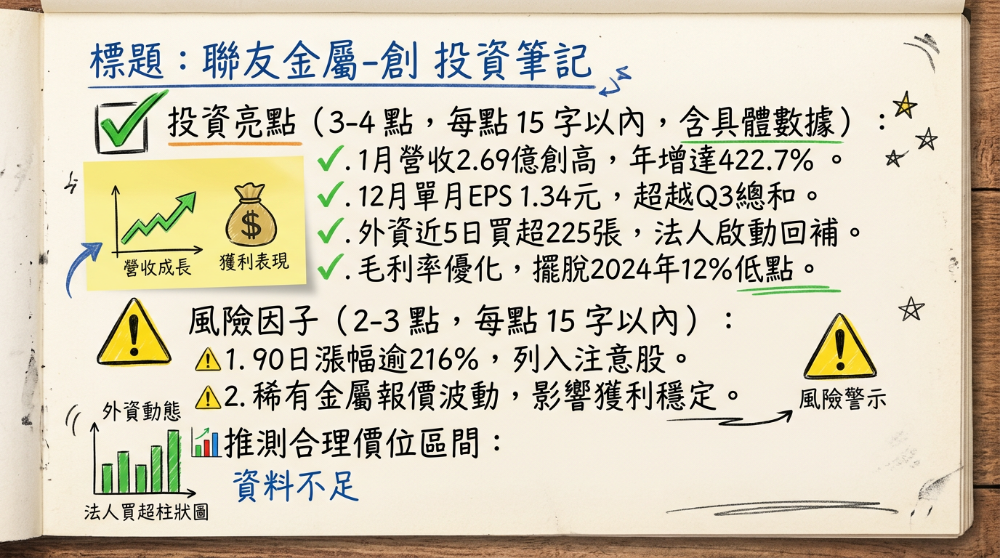

7610 聯友金屬-創 深度研究報告
一句話摘要
聯友金屬受惠於「非中供應鏈」轉單紅利、高值化鈷粉放量與鎢價維持高位，營收邁入跳躍式成長期，為全球稀有金屬資源循環再製的戰略型標的。
公司概覽
聯友金屬（7610）為台灣稀有金屬（鎢、鈷）資源循環再製領導廠商，透過「城市採礦」模式，將半導體及航太廢料還原為高純度金屬原料，滿足 ESG 與 RMI 責任礦產合規需求。
業務營收結構（2025 Q4 估計）
| 業務類別 | 營收佔比 | 核心產品 | 終端應用 |
|---|
| 鎢酸鹽類產品 | 70%~75% | 鎢酸鈉 (Na2WO4)、仲鎢酸銨 (APT) | 半導體 CMP 耗材、穿甲彈、噴射引擎 |
| 鈷金屬相關 | 20%~25% | 電池級硫酸鈷、金屬鈷粉 | 電動車電池、硬質合金、軍工 |
| 其他 | ~5% | 化學藥品、其他稀有金屬處理 | 化學工業、材料科學 |
核心競爭優勢
非中供應鏈戰略地位： 中國管制鎢出口及剛果限制鈷供應，聯友身為全球第 2 大鎢酸鈉出口商（2025 年外銷市佔達 26%），成為歐美航太、軍工、半導體大廠的首選。
技術護城河： 採用低耗能「濕法冶金」及即將導入的「鋅熔法」，回收率高且具備 UL 與 RMI 認證，可與原生礦產達到「化學等價」。
獲利模式轉型： 從低毛利「代工（加工費）」轉向「自售模式」，在金屬漲價週期享有溢價與存貨增值。
財務分析
月營收趨勢表（2025/08 - 2026/01）
| 月份 | 營收（百萬元） | 月增率 (MoM) | 年增率 (YoY) | 簡評 |
|---|
| 2026/01 | 268.8 | +38.29% | +422.68% | 歷史新高，出貨量價齊揚 |
| 2025/12 | 194.4 | +19.64% | +227.30% | 獲利爆發期開始 |
| 2025/11 | 162.5 | +1.81% | +570.50% | 營收站穩 1.5 億大關 |
| 2025/10 | 159.6 | +22.36% | +90.16% | - |
| 2025/09 | 130.4 | +9.53% | +26.77% | - |
| 2025/08 | 119.1 | +0.80% | +24.57% | - |
- 2024 (A)： 營收 10.99 億元，EPS 1.05 元，毛利率約 12%。
- 2025 (P)： 營收 14.05 億元（年增 28%），EPS 預估 5.1 - 5.5 元（12 月單月自結 EPS 達 1.34 元）。
- 2026 (E)： 法人預估營收挑战 23.4 億元，EPS 預估區間為 10.07 - 16.0 元。
法說會重點
- 出貨 Guidance： 2026 年受惠中國出口管制，非中訂單能見度已達下半年；金屬鈷粉首批 10-15 噸已於 2025 年底出貨。
- 毛利率目標： 隨著產品由鹽類轉向高值化粉末，管理層預期 2026 年毛利率維持在 25% 以上。
- 產能擴張： 屏東科學園區新廠（投資 6.5 億元）已啟動，目標垂直整合至下游碳化鎢產線。
券商觀點
| 券商名 | 目標價 | 評等 | 日期 | 2026 EPS 預估 |
|---|
| 第一金證券 | 400 元 | 買進/看多 | 2026/02/25 | 16.0 元 |
| 宏遠投顧 | 252 元 | 買進 | 2026/02/03 | 10.07 元 |
| FactSet 中位數 | 236 元 | - | 2026/01/12 | 5.06 元 (2025估) |
財報深度分析
利潤率趨勢表
| 期間 | 毛利率 | 營業利益率 | 稅後淨利率 | 備註 |
|---|
| 2025 Q3 | 28.61% | 19.99% | 14.97% | 產品組合優化顯著 |
| 2025 Q2 | ~22.00% | - | - | 由虧轉盈轉折點 |
| 2025 Q1 | 負值/極低 | - | - | 產線調整與研發投入 |
| 2024 全年 | 12.00% | - | - | 低基期 |
- 存貨分析： 存貨週轉天數約 217 天，反映稀有金屬「戰略備料」特性；應收帳款週轉 31.5 天，顯示客戶（如台積電、特斯拉）信譽與回款能力極佳。
- 資本支出： 屏東科學園區新廠投資 6.5 億元，將新增 2,500 噸「鋅熔法」再生產能。
股權異動
- 2025/09： 董事「日本先進材料有限公司」申報轉讓 739 張（配合上市過額配售）。
- 股利政策： 2025 年配發現金 0.2 元、股票 2.35 元。顯示公司處於擴張期，保留資金用於屏科廠建設（高配股策略）。
- 融資狀況： 目前主要透過上市現增集資，無發行可轉換公司債 (CB)。
產業分析
全球競爭格局比較表（2025 數據預估）
| 公司名稱 | 產業定位 | 2025 毛利率 | 2025 EPS | 競爭亮點 |
|---|
| 聯友金屬 (7610) | 鎢鈷回收 | 20%~28% | ~5.1 元 | 非中供應鏈首選、毛利成長強 |
| 廈門鎢業 | 礦山整合 | - | - | 全球龍頭，受出口配額管制影響 |
| 康普 (4739) | 電池材料 | 10%~12% | ~3.5 元 | 規模大，受鎳價波動影響大 |
| 美琪瑪 (4721) | 電池材料 | 11%~13% | ~4.0 元 | 依賴電動車需求 |
| 光洋科 (1785) | 貴金屬回收 | 13%~15% | ~2.8 元 | 規模大但非鎢鈷專精 |
- 供需趨勢： 2025 年中國縮減鎢配額 6.48%，剛果限制鈷出口，全球供給缺口支撐報價長期維持高位。
近期催化劑
1. 2026 年 1 月營收年增 422% 超出預期。
2. 2026 Q2 金屬鈷粉正式放量。
3. 地緣政治衝突升溫，軍工/航太對鎢需求增加。
1. 國際金屬價格（鎢、鈷）若出現暴跌，將有庫存跌價風險。
2. APT 產線受土地變更影響，進度可能延後。
⭐ 成長動能時間軸
- 2025/12： 子公司聯友能源完成「金屬鈷粉」驗證，進入小量產。
- 2026/01： 屏東科學園區新廠啟動建置，投入 6.5 億元。
- 2026 Q2： 高值化金屬鈷粉正式量產放量，貢獻新成長動能。
- 2026 H2： 鎢酸鈉受益於先進製程（2nm/1nm）CMP 廢料回收需求攀升。
- 2027 Q4： 屏科新廠正式投產，新增 2,500 噸產能，實現鎢粉/碳化鎢垂直整合。
2026 展望
- 成長動能： 受惠於 1 月營收奠定高基期，加上 Q2 鈷粉新產品加入，法人預期 2026 全年營收可挑戰 23 億元以上，獲利因自售比例提升而具有上修空間。
- 風險： 需注意台幣強升帶來的匯損，以及市場對創新板流動性的評價溢價是否收斂。
投資結論
獲利跳升期： 2025 年 EPS 約 5.1 元，2026 年預估翻倍至 10-16 元，成長動能極為強勁。
戰略溢價： 身為非中供應鏈的稀缺標的，應享有高於同業的本益比（PE）。
目標價區間建議： 參考券商預估，合理 PE 給予 20-25 倍，目標價區間看好在 252 - 400 元 之間。若 2026 Q2 鈷粉放量優於預期，股價仍具上攻潛力。
本報告由 AI 自動產生，資料來源為公開網路資訊，僅供參考，不構成投資建議。產生時間：2026-03-01 04:26
📊 資訊卡


